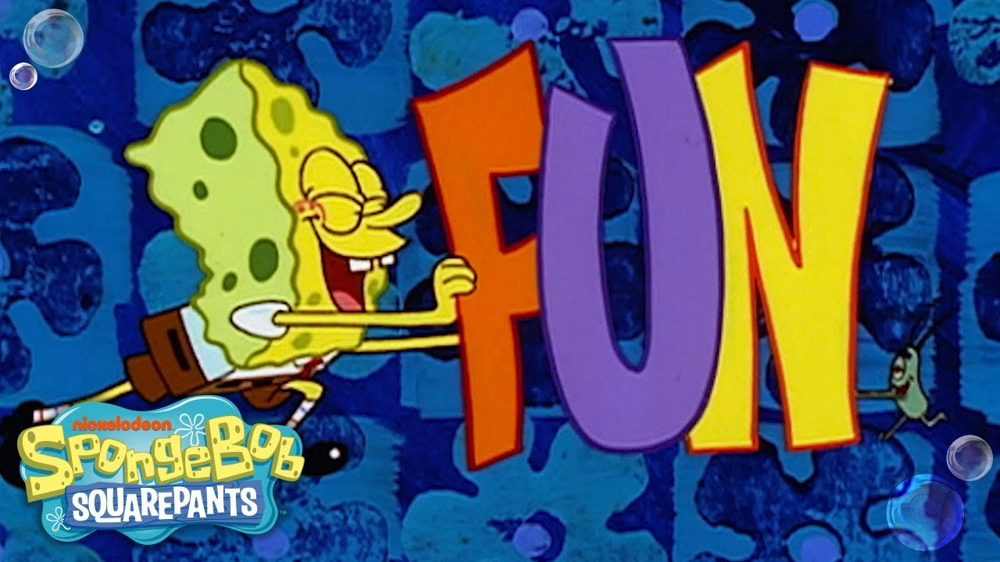

The first part of this assignment was to install the Basic_JavaScript_1.js, which I didnt think was very hard to do. Good intro into JavaScript.
The second part of this, so far, is making two paragraphs 2 different colors. As I have just done now. Also, not very difficult although rather fun!
